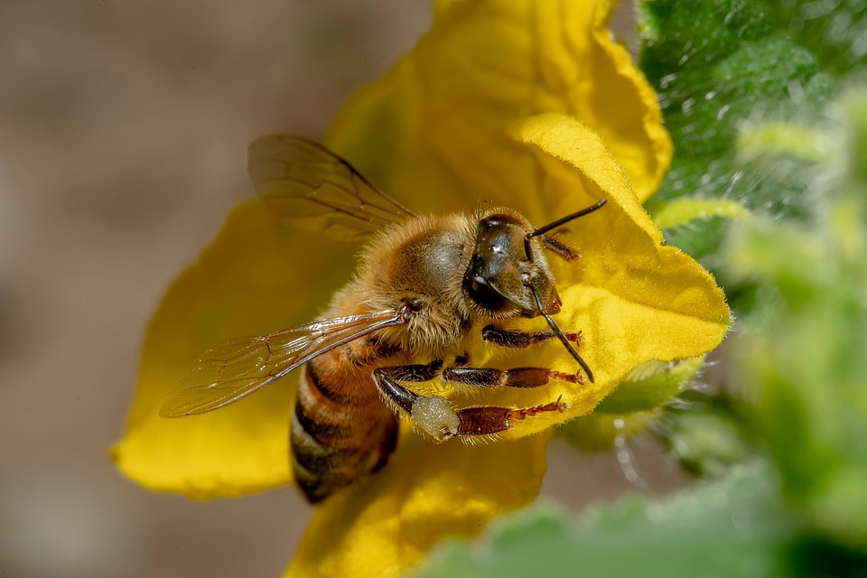
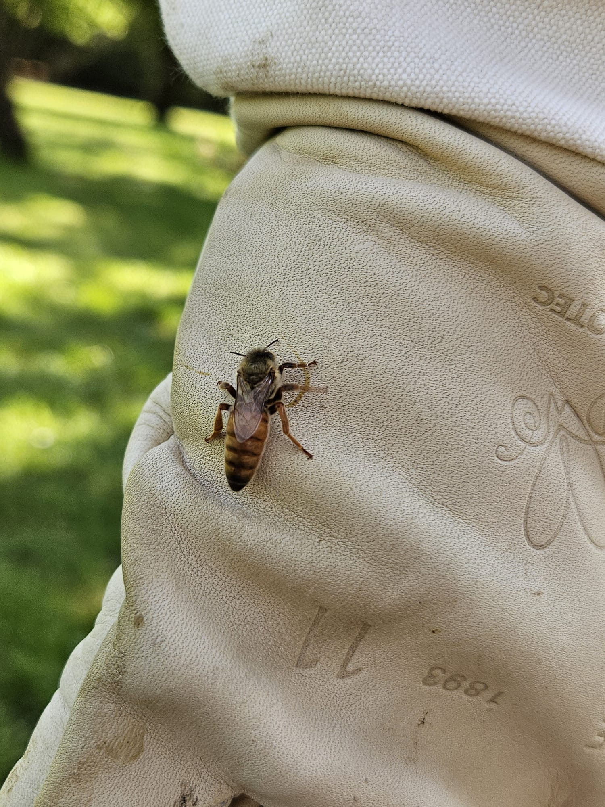

Il tuo miele locale, consegnato vicino a te intorno a Villerupt
La Ruche Gourmande raccoglie e consegna il proprio miele artigianale direttamente nei comuni vicini a Villerupt — guidata da M. Salis, apicoltore appassionato, che ti accoglie anche per il ritiro in sede.




Raccolto a Villerupt
Consegnato vicino a te, gratis il sabato
Ordine telefonico, semplice e veloce
I Nostri Prodotti
«Il miele è un tesoro della natura, dolce per il corpo e per l'anima.» – Jean-Henri Fabre


La nostra zona di consegna
Consegniamo gratuitamente il sabato a Villerupt e nei comuni vicini. Altrove, il ritiro presso La Ruche Gourmande resta sempre possibile, su appuntamento.
Vedi zona di consegna
Un know-how artigianale, un impegno per la biodiversità
La Ruche Gourmande incarna un know-how artigianale trasmesso da M. Salis, apicoltore appassionato, nel rispetto delle api e degli equilibri naturali del Pays Haut. Ogni vasetto riflette questa esigenza.
Scopri la nostra storiaVuoi iniziare l'apicoltura?
La Ruche Gourmande propone sciami di qualità e consigli per iniziare al meglio la tua avventura apistica.
Scopri gli sciamiUna domanda? Voglia di ordinare?
Chiama direttamente La Ruche Gourmande.